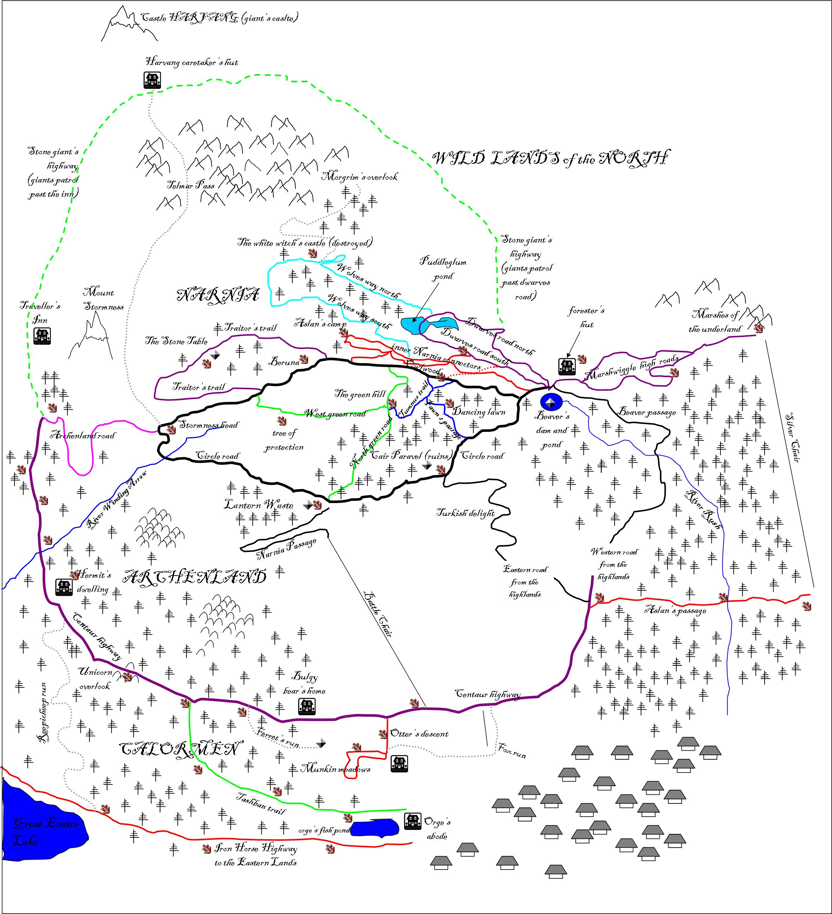

The map of Narnia
(click here to get a bigger version) {kind=link}
The letter found on the doors to Narnia
Dear Kindred-Spirit,
It is said that the mountains once sang the songs of time. If ever a story was told, the mountains would guard that knowledge and retell the tale to whoever asked.
But that was long ago and the voices of the mountains are nothing more than whispers as the howling wind sweeps over their jagged peaks.
The mountains are old and of the same magic that made the oceans, earth, and sky. Like the ancient power that brought both Aslan and the Ice-Queen,
Narnia was a land of opposites, but now it tenuously balances on the brink of chaos. The Queen’s demise upset the ancient flow of magic. Hearing the anguish of the land,
the mountains stir once again. The rumblings in the deep bring dark tidings and the howls of bloodthirsty wolves now ride the evening breeze. The spring brought by the Queen’s
defeat has given way to summer, fall, and now eternal winter once again. Rivers once flowing quick and strong—protecting this peaceful land—are now laced with ice and soon
the Queen’s armies will cross them and conquer us all once again. We are seeking scouts and fighters to help thwart the impending threat. You will need the ability to move
fast across the snow, first-aid, and keen observation to help thwart the Queen’s rebirth. Already, one of Narnia’s most magical relics—THE CASPIAN CROWN—has been stolen
by her minions and shattered into four pieces. Fortunately, however, the creatures of the forest attacked them and stole all of the crown’s stones before the wolves
could get away. But the wolves will be back for them and we must gather them from the creatures before the wolves find them. Some are still in the animals’ possession,
but others have been hidden. Please, the Land of Narnia needs help; aid us in our fight! The start of your journey, should you choose to accept it,
begins on the other side of this door. Be careful.
Sincerely,
Narnia’s Animal Militia (NAM)
 Leaping into Narnia. Notice how kind of fuzzy one gets in this land. |
If you are a little shaky on your Narnia, here are some of the key characters referenced on week 1:
|
BBC has a great series of 3 DVDs on 4 of the Narnia books: Lion, the Witch, and the Wardrobe, The Silver Chair, The Dawn Trader, Prince Caspian. Of course, the ultimate reference is the books. Although the Lion, the Witch and the Wardrobe is the one everyone has heard of, this is actually not the best of the lot. My daughter says Magician's Nephew (the story of how the witch comes to Narnia), the Silver Chair and Price Caspian are better.
The letter that NAM found on the wolf scout

The note from NAM about the wolf's letter